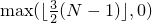

All the operations in [alg.sorting] have two versions: one that takes a function object of type Compare and one that uses an operator<.
Compare is a function object type ([function.objects]). The return value of the function call operation applied to an object of type Compare, when contextually converted to bool (Clause [conv]), yields true if the first argument of the call is less than the second, and false otherwise. Compare comp is used throughout for algorithms assuming an ordering relation. It is assumed that comp will not apply any non-constant function through the dereferenced iterator.
For all algorithms that take Compare, there is a version that uses operator< instead. That is, comp(*i, *j) != false defaults to *i < *j != false. For algorithms other than those described in [alg.binary.search], comp shall induce a strict weak ordering on the values.
The term strict refers to the requirement of an irreflexive relation (!comp(x, x) for all x), and the term weak to requirements that are not as strong as those for a total ordering, but stronger than those for a partial ordering. If we define equiv(a, b) as !comp(a, b) && !comp(b, a), then the requirements are that comp and equiv both be transitive relations:
comp(a, b) && comp(b, c) implies comp(a, c)
equiv(a, b) && equiv(b, c) implies equiv(a, c)
[ Note: Under these conditions, it can be shown that
equiv is an equivalence relation
comp induces a well-defined relation on the equivalence classes determined by equiv
The induced relation is a strict total ordering.
— end note ]
A sequence is sorted with respect to a comparator comp if for every iterator i pointing to the sequence and every non-negative integer n such that i + n is a valid iterator pointing to an element of the sequence, comp(*(i + n), *i) == false.
A sequence [start, finish) is partitioned with respect to an expression f(e) if there exists an integer n such that for all 0 <= i < (finish - start), f(*(start + i)) is true if and only if i < n.
In the descriptions of the functions that deal with ordering relationships we frequently use a notion of equivalence to describe concepts such as stability. The equivalence to which we refer is not necessarily an operator==, but an equivalence relation induced by the strict weak ordering. That is, two elements a and b are considered equivalent if and only if !(a < b) && !(b < a).
template<class RandomAccessIterator>
void sort(RandomAccessIterator first, RandomAccessIterator last);
template<class RandomAccessIterator, class Compare>
void sort(RandomAccessIterator first, RandomAccessIterator last,
Compare comp);
Effects: Sorts the elements in the range [first, last).
Requires: RandomAccessIterator shall satisfy the requirements of ValueSwappable ([swappable.requirements]). The type of *first shall satisfy the requirements of MoveConstructible (Table [tab:moveconstructible]) and of MoveAssignable (Table [tab:moveassignable]).
Complexity: Ο(Nlog(N)) comparisons, where N = last - first.
template<class RandomAccessIterator>
void stable_sort(RandomAccessIterator first, RandomAccessIterator last);
template<class RandomAccessIterator, class Compare>
void stable_sort(RandomAccessIterator first, RandomAccessIterator last,
Compare comp);
Effects: Sorts the elements in the range [first, last).
Requires: RandomAccessIterator shall satisfy the requirements of ValueSwappable ([swappable.requirements]). The type of *first shall satisfy the requirements of MoveConstructible (Table [tab:moveconstructible]) and of MoveAssignable (Table [tab:moveassignable]).
Complexity: At most N log2(N) comparisons, where N = last - first, but only N log(N) comparisons if there is enough extra memory.
Remarks: Stable ([algorithm.stable]).
template<class RandomAccessIterator>
void partial_sort(RandomAccessIterator first,
RandomAccessIterator middle,
RandomAccessIterator last);
template<class RandomAccessIterator, class Compare>
void partial_sort(RandomAccessIterator first,
RandomAccessIterator middle,
RandomAccessIterator last,
Compare comp);
Requires: RandomAccessIterator shall satisfy the requirements of ValueSwappable ([swappable.requirements]). The type of *first shall satisfy the requirements of MoveConstructible (Table [tab:moveconstructible]) and of MoveAssignable (Table [tab:moveassignable]).
Complexity: It takes approximately (last - first) * log(middle - first) comparisons.
template<class InputIterator, class RandomAccessIterator>
RandomAccessIterator
partial_sort_copy(InputIterator first, InputIterator last,
RandomAccessIterator result_first,
RandomAccessIterator result_last);
template<class InputIterator, class RandomAccessIterator,
class Compare>
RandomAccessIterator
partial_sort_copy(InputIterator first, InputIterator last,
RandomAccessIterator result_first,
RandomAccessIterator result_last,
Compare comp);
Effects: Places the first min(last - first, result_last - result_first) sorted elements into the range [result_first, result_first + min(last - first, result_last - result_first)).
Returns: The smaller of: result_last or result_first + (last - first).
Requires: RandomAccessIterator shall satisfy the requirements of ValueSwappable ([swappable.requirements]). The type of *result_first shall satisfy the requirements of MoveConstructible (Table [tab:moveconstructible]) and of MoveAssignable (Table [tab:moveassignable]).
Complexity: Approximately (last - first) * log(min(last - first, result_last - result_first)) comparisons.
template<class ForwardIterator>
bool is_sorted(ForwardIterator first, ForwardIterator last);
Returns: is_sorted_until(first, last) == last
template<class ForwardIterator, class Compare>
bool is_sorted(ForwardIterator first, ForwardIterator last,
Compare comp);
Returns: is_sorted_until(first, last, comp) == last
template<class ForwardIterator>
ForwardIterator is_sorted_until(ForwardIterator first, ForwardIterator last);
template<class ForwardIterator, class Compare>
ForwardIterator is_sorted_until(ForwardIterator first, ForwardIterator last,
Compare comp);
Returns: If (last - first) < 2, returns last. Otherwise, returns the last iterator i in [first, last] for which the range [first, i) is sorted.
Complexity: Linear.
template<class RandomAccessIterator>
void nth_element(RandomAccessIterator first, RandomAccessIterator nth,
RandomAccessIterator last);
template<class RandomAccessIterator, class Compare>
void nth_element(RandomAccessIterator first, RandomAccessIterator nth,
RandomAccessIterator last, Compare comp);
After nth_element the element in the position pointed to by nth is the element that would be in that position if the whole range were sorted, unless nth == last. Also for every iterator i in the range [first, nth) and every iterator j in the range [nth, last) it holds that: !(*j < *i) or comp(*j, *i) == false.
Requires: RandomAccessIterator shall satisfy the requirements of ValueSwappable ([swappable.requirements]). The type of *first shall satisfy the requirements of MoveConstructible (Table [tab:moveconstructible]) and of MoveAssignable (Table [tab:moveassignable]).
Complexity: Linear on average.
All of the algorithms in this section are versions of binary search and assume that the sequence being searched is partitioned with respect to an expression formed by binding the search key to an argument of the implied or explicit comparison function. They work on non-random access iterators minimizing the number of comparisons, which will be logarithmic for all types of iterators. They are especially appropriate for random access iterators, because these algorithms do a logarithmic number of steps through the data structure. For non-random access iterators they execute a linear number of steps.
template<class ForwardIterator, class T>
ForwardIterator
lower_bound(ForwardIterator first, ForwardIterator last,
const T& value);
template<class ForwardIterator, class T, class Compare>
ForwardIterator
lower_bound(ForwardIterator first, ForwardIterator last,
const T& value, Compare comp);
Requires: The elements e of [first, last) shall be partitioned with respect to the expression e < value or comp(e, value).
Returns: The furthermost iterator i in the range [first, last] such that for every iterator j in the range [first, i) the following corresponding conditions hold: *j < value or comp(*j, value) != false.
Complexity: At most log2(last - first) + Ο(1) comparisons.
template<class ForwardIterator, class T>
ForwardIterator
upper_bound(ForwardIterator first, ForwardIterator last,
const T& value);
template<class ForwardIterator, class T, class Compare>
ForwardIterator
upper_bound(ForwardIterator first, ForwardIterator last,
const T& value, Compare comp);
Requires: The elements e of [first, last) shall be partitioned with respect to the expression !(value < e) or !comp(value, e).
Returns: The furthermost iterator i in the range [first, last] such that for every iterator j in the range [first, i) the following corresponding conditions hold: !(value < *j) or comp(value, *j) == false.
Complexity: At most log2(last - first) + Ο(1) comparisons.
template<class ForwardIterator, class T>
pair<ForwardIterator, ForwardIterator>
equal_range(ForwardIterator first,
ForwardIterator last, const T& value);
template<class ForwardIterator, class T, class Compare>
pair<ForwardIterator, ForwardIterator>
equal_range(ForwardIterator first,
ForwardIterator last, const T& value,
Compare comp);
Requires: The elements e of [first, last) shall be partitioned with respect to the expressions e < value and !(value < e) or comp(e, value) and !comp(value, e). Also, for all elements e of [first, last), e < value shall imply !(value < e) or comp(e, value) shall imply !comp(value, e).
Returns:
make_pair(lower_bound(first, last, value),
upper_bound(first, last, value))
or
make_pair(lower_bound(first, last, value, comp),
upper_bound(first, last, value, comp))
Complexity: At most 2 * log2(last - first) + Ο(1) comparisons.
template<class ForwardIterator, class T>
bool binary_search(ForwardIterator first, ForwardIterator last,
const T& value);
template<class ForwardIterator, class T, class Compare>
bool binary_search(ForwardIterator first, ForwardIterator last,
const T& value, Compare comp);
Requires: The elements e of [first, last) are partitioned with respect to the expressions e < value and !(value < e) or comp(e, value) and !comp(value, e). Also, for all elements e of [first, last), e < value implies !(value < e) or comp(e, value) implies !comp(value, e).
Returns: true if there is an iterator i in the range [first, last) that satisfies the corresponding conditions: !(*i < value) && !(value < *i) or comp(*i, value) == false && comp(value, *i) == false.
Complexity: At most log2(last - first) + Ο(1) comparisons.
template<class InputIterator1, class InputIterator2,
class OutputIterator>
OutputIterator
merge(InputIterator1 first1, InputIterator1 last1,
InputIterator2 first2, InputIterator2 last2,
OutputIterator result);
template<class InputIterator1, class InputIterator2,
class OutputIterator, class Compare>
OutputIterator
merge(InputIterator1 first1, InputIterator1 last1,
InputIterator2 first2, InputIterator2 last2,
OutputIterator result, Compare comp);
Effects: Copies all the elements of the two ranges [first1, last1) and [first2, last2) into the range [result, result_last), where result_last is result + (last1 - first1) + (last2 - first2), such that the resulting range satisfies is_sorted(result, result_last) or is_sorted(result, result_last, comp), respectively.
Requires: The ranges [first1, last1) and [first2, last2) shall be sorted with respect to operator< or comp. The resulting range shall not overlap with either of the original ranges.
Returns: result + (last1 - first1) + (last2 - first2).
Complexity: At most (last1 - first1) + (last2 - first2) - 1 comparisons.
Remarks: Stable ([algorithm.stable]).
template<class BidirectionalIterator>
void inplace_merge(BidirectionalIterator first,
BidirectionalIterator middle,
BidirectionalIterator last);
template<class BidirectionalIterator, class Compare>
void inplace_merge(BidirectionalIterator first,
BidirectionalIterator middle,
BidirectionalIterator last, Compare comp);
Effects: Merges two sorted consecutive ranges [first, middle) and [middle, last), putting the result of the merge into the range [first, last). The resulting range will be in non-decreasing order; that is, for every iterator i in [first, last) other than first, the condition *i < *(i - 1) or, respectively, comp(*i, *(i - 1)) will be false.
Requires: The ranges [first, middle) and [middle, last) shall be sorted with respect to operator< or comp. BidirectionalIterator shall satisfy the requirements of ValueSwappable ([swappable.requirements]). The type of *first shall satisfy the requirements of MoveConstructible (Table [tab:moveconstructible]) and of MoveAssignable (Table [tab:moveassignable]).
Complexity: When enough additional memory is available, (last - first) - 1 comparisons. If no additional memory is available, an algorithm with complexity N log(N) may be used, where N = last - first.
Remarks: Stable ([algorithm.stable]).
This section defines all the basic set operations on sorted structures. They also work with multisets ([multiset]) containing multiple copies of equivalent elements. The semantics of the set operations are generalized to multisets in a standard way by defining set_union() to contain the maximum number of occurrences of every element, set_intersection() to contain the minimum, and so on.
template<class InputIterator1, class InputIterator2>
bool includes(InputIterator1 first1, InputIterator1 last1,
InputIterator2 first2, InputIterator2 last2);
template<class InputIterator1, class InputIterator2, class Compare>
bool includes(InputIterator1 first1, InputIterator1 last1,
InputIterator2 first2, InputIterator2 last2,
Compare comp);
Returns: true if [first2, last2) is empty or if every element in the range [first2, last2) is contained in the range [first1, last1). Returns false otherwise.
Complexity: At most 2 * ((last1 - first1) + (last2 - first2)) - 1 comparisons.
template<class InputIterator1, class InputIterator2,
class OutputIterator>
OutputIterator
set_union(InputIterator1 first1, InputIterator1 last1,
InputIterator2 first2, InputIterator2 last2,
OutputIterator result);
template<class InputIterator1, class InputIterator2,
class OutputIterator, class Compare>
OutputIterator
set_union(InputIterator1 first1, InputIterator1 last1,
InputIterator2 first2, InputIterator2 last2,
OutputIterator result, Compare comp);
Effects: Constructs a sorted union of the elements from the two ranges; that is, the set of elements that are present in one or both of the ranges.
Requires: The resulting range shall not overlap with either of the original ranges.
Returns: The end of the constructed range.
Complexity: At most 2 * ((last1 - first1) + (last2 - first2)) - 1 comparisons.
Remarks: If [first1, last1) contains m elements that are equivalent to each other and [first2, last2) contains n elements that are equivalent to them, then all m elements from the first range shall be copied to the output range, in order, and then max(n - m, 0) elements from the second range shall be copied to the output range, in order.
template<class InputIterator1, class InputIterator2,
class OutputIterator>
OutputIterator
set_intersection(InputIterator1 first1, InputIterator1 last1,
InputIterator2 first2, InputIterator2 last2,
OutputIterator result);
template<class InputIterator1, class InputIterator2,
class OutputIterator, class Compare>
OutputIterator
set_intersection(InputIterator1 first1, InputIterator1 last1,
InputIterator2 first2, InputIterator2 last2,
OutputIterator result, Compare comp);
Effects: Constructs a sorted intersection of the elements from the two ranges; that is, the set of elements that are present in both of the ranges.
Requires: The resulting range shall not overlap with either of the original ranges.
Returns: The end of the constructed range.
Complexity: At most 2 * ((last1 - first1) + (last2 - first2)) - 1 comparisons.
Remarks: If [first1, last1) contains m elements that are equivalent to each other and [first2, last2) contains n elements that are equivalent to them, the first min(m, n) elements shall be copied from the first range to the output range, in order.
template<class InputIterator1, class InputIterator2,
class OutputIterator>
OutputIterator
set_difference(InputIterator1 first1, InputIterator1 last1,
InputIterator2 first2, InputIterator2 last2,
OutputIterator result);
template<class InputIterator1, class InputIterator2,
class OutputIterator, class Compare>
OutputIterator
set_difference(InputIterator1 first1, InputIterator1 last1,
InputIterator2 first2, InputIterator2 last2,
OutputIterator result, Compare comp);
Effects: Copies the elements of the range [first1, last1) which are not present in the range [first2, last2) to the range beginning at result. The elements in the constructed range are sorted.
Requires: The resulting range shall not overlap with either of the original ranges.
Returns: The end of the constructed range.
Complexity: At most 2 * ((last1 - first1) + (last2 - first2)) - 1 comparisons.
Remarks: If [first1, last1) contains m elements that are equivalent to each other and [first2, last2) contains n elements that are equivalent to them, the last max(m - n, 0) elements from [first1, last1) shall be copied to the output range.
template<class InputIterator1, class InputIterator2,
class OutputIterator>
OutputIterator
set_symmetric_difference(InputIterator1 first1, InputIterator1 last1,
InputIterator2 first2, InputIterator2 last2,
OutputIterator result);
template<class InputIterator1, class InputIterator2,
class OutputIterator, class Compare>
OutputIterator
set_symmetric_difference(InputIterator1 first1, InputIterator1 last1,
InputIterator2 first2, InputIterator2 last2,
OutputIterator result, Compare comp);
Effects: Copies the elements of the range [first1, last1) that are not present in the range [first2, last2), and the elements of the range [first2, last2) that are not present in the range [first1, last1) to the range beginning at result. The elements in the constructed range are sorted.
Requires: The resulting range shall not overlap with either of the original ranges.
Returns: The end of the constructed range.
Complexity: At most 2 * ((last1 - first1) + (last2 - first2)) - 1 comparisons.
Remarks: If [first1, last1) contains m elements that are equivalent to each other and [first2, last2) contains n elements that are equivalent to them, then |m - n| of those elements shall be copied to the output range: the last m - n of these elements from [first1, last1) if m > n, and the last n - m of these elements from [first2, last2) if m < n.
A heap is a particular organization of elements in a range between two random access iterators [a, b). Its two key properties are:
There is no element greater than *a in the range and
*a may be removed by pop_heap(), or a new element added by push_heap(), in O(log(N)) time.
These properties make heaps useful as priority queues.
make_heap() converts a range into a heap and sort_heap() turns a heap into a sorted sequence.
template<class RandomAccessIterator>
void push_heap(RandomAccessIterator first, RandomAccessIterator last);
template<class RandomAccessIterator, class Compare>
void push_heap(RandomAccessIterator first, RandomAccessIterator last,
Compare comp);
Effects: Places the value in the location last - 1 into the resulting heap [first, last).
Requires: The range [first, last - 1) shall be a valid heap. The type of *first shall satisfy the MoveConstructible requirements (Table [tab:moveconstructible]) and the MoveAssignable requirements (Table [tab:moveassignable]).
Complexity: At most log(last - first) comparisons.
template<class RandomAccessIterator>
void pop_heap(RandomAccessIterator first, RandomAccessIterator last);
template<class RandomAccessIterator, class Compare>
void pop_heap(RandomAccessIterator first, RandomAccessIterator last,
Compare comp);
Requires: The range [first, last) shall be a valid non-empty heap. RandomAccessIterator shall satisfy the requirements of ValueSwappable ([swappable.requirements]). The type of *first shall satisfy the requirements of MoveConstructible (Table [tab:moveconstructible]) and of MoveAssignable (Table [tab:moveassignable]).
Effects: Swaps the value in the location first with the value in the location last - 1 and makes [first, last - 1) into a heap.
Complexity: At most 2 log(last - first) comparisons.
template<class RandomAccessIterator>
void make_heap(RandomAccessIterator first, RandomAccessIterator last);
template<class RandomAccessIterator, class Compare>
void make_heap(RandomAccessIterator first, RandomAccessIterator last,
Compare comp);
Effects: Constructs a heap out of the range [first, last).
Requires: The type of *first shall satisfy the MoveConstructible requirements (Table [tab:moveconstructible]) and the MoveAssignable requirements (Table [tab:moveassignable]).
Complexity: At most 3(last - first) comparisons.
template<class RandomAccessIterator>
void sort_heap(RandomAccessIterator first, RandomAccessIterator last);
template<class RandomAccessIterator, class Compare>
void sort_heap(RandomAccessIterator first, RandomAccessIterator last,
Compare comp);
Effects: Sorts elements in the heap [first, last).
Requires: The range [first, last) shall be a valid heap. RandomAccessIterator shall satisfy the requirements of ValueSwappable ([swappable.requirements]). The type of *first shall satisfy the requirements of MoveConstructible (Table [tab:moveconstructible]) and of MoveAssignable (Table [tab:moveassignable]).
Complexity: At most N log(N) comparisons, where N = last - first.
template<class RandomAccessIterator>
bool is_heap(RandomAccessIterator first, RandomAccessIterator last);
Returns: is_heap_until(first, last) == last
template<class RandomAccessIterator, class Compare>
bool is_heap(RandomAccessIterator first, RandomAccessIterator last, Compare comp);
Returns: is_heap_until(first, last, comp) == last
template<class RandomAccessIterator>
RandomAccessIterator is_heap_until(RandomAccessIterator first, RandomAccessIterator last);
template<class RandomAccessIterator, class Compare>
RandomAccessIterator is_heap_until(RandomAccessIterator first, RandomAccessIterator last,
Compare comp);
Returns: If (last - first) < 2, returns last. Otherwise, returns the last iterator i in [first, last] for which the range [first, i) is a heap.
Complexity: Linear.
template<class T> constexpr const T& min(const T& a, const T& b);
template<class T, class Compare>
constexpr const T& min(const T& a, const T& b, Compare comp);
Requires: For the first form, type T shall be LessThanComparable (Table [tab:lessthancomparable]).
Returns: The smaller value.
Remarks: Returns the first argument when the arguments are equivalent.
Complexity: Exactly one comparison.
template<class T>
constexpr T min(initializer_list<T> t);
template<class T, class Compare>
constexpr T min(initializer_list<T> t, Compare comp);
Requires: T shall be CopyConstructible and t.size() > 0. For the first form, type T shall be LessThanComparable.
Returns: The smallest value in the initializer_list.
Remarks: Returns a copy of the leftmost argument when several arguments are equivalent to the smallest.
Complexity: Exactly t.size() - 1 comparisons.
template<class T> constexpr const T& max(const T& a, const T& b);
template<class T, class Compare>
constexpr const T& max(const T& a, const T& b, Compare comp);
Requires: For the first form, type T shall be LessThanComparable (Table [tab:lessthancomparable]).
Returns: The larger value.
Remarks: Returns the first argument when the arguments are equivalent.
Complexity: Exactly one comparison.
template<class T>
constexpr T max(initializer_list<T> t);
template<class T, class Compare>
constexpr T max(initializer_list<T> t, Compare comp);
Requires: T shall be CopyConstructible and t.size() > 0. For the first form, type T shall be LessThanComparable.
Returns: The largest value in the initializer_list.
Remarks: Returns a copy of the leftmost argument when several arguments are equivalent to the largest.
Complexity: Exactly t.size() - 1 comparisons.
template<class T> constexpr pair<const T&, const T&> minmax(const T& a, const T& b);
template<class T, class Compare>
constexpr pair<const T&, const T&> minmax(const T& a, const T& b, Compare comp);
Requires: For the first form, type T shall be LessThanComparable (Table [tab:lessthancomparable]).
Returns: pair<const T&, const T&>(b, a) if b is smaller than a, and pair<const T&, const T&>(a, b) otherwise.
Remarks: Returns pair<const T&, const T&>(a, b) when the arguments are equivalent.
Complexity: Exactly one comparison.
template<class T>
constexpr pair<T, T> minmax(initializer_list<T> t);
template<class T, class Compare>
constexpr pair<T, T> minmax(initializer_list<T> t, Compare comp);
Requires: T shall be CopyConstructible and t.size() > 0. For the first form, type T shall be LessThanComparable.
Returns: pair<T, T>(x, y), where x has the smallest and y has the largest value in the initializer list.
Remarks: x is a copy of the leftmost argument when several arguments are equivalent to the smallest. y is a copy of the rightmost argument when several arguments are equivalent to the largest.
Complexity: At most (3/2)t.size() applications of the corresponding predicate.
template<class ForwardIterator>
constexpr ForwardIterator min_element(ForwardIterator first, ForwardIterator last);
template<class ForwardIterator, class Compare>
constexpr ForwardIterator min_element(ForwardIterator first, ForwardIterator last,
Compare comp);
Returns: The first iterator i in the range [first, last) such that for every iterator j in the range [first, last) the following corresponding conditions hold: !(*j < *i) or comp(*j, *i) == false. Returns last if first == last.
Complexity: Exactly max(last - first - 1, 0) applications of the corresponding comparisons.
template<class ForwardIterator>
constexpr ForwardIterator max_element(ForwardIterator first, ForwardIterator last);
template<class ForwardIterator, class Compare>
constexpr ForwardIterator max_element(ForwardIterator first, ForwardIterator last,
Compare comp);
Returns: The first iterator i in the range [first, last) such that for every iterator j in the range [first, last) the following corresponding conditions hold: !(*i < *j) or comp(*i, *j) == false. Returns last if first == last.
Complexity: Exactly max(last - first - 1, 0) applications of the corresponding comparisons.
template<class ForwardIterator>
constexpr pair<ForwardIterator, ForwardIterator>
minmax_element(ForwardIterator first, ForwardIterator last);
template<class ForwardIterator, class Compare>
constexpr pair<ForwardIterator, ForwardIterator>
minmax_element(ForwardIterator first, ForwardIterator last, Compare comp);
Returns: make_pair(first, first) if [first, last) is empty, otherwise make_pair(m, M), where m is the first iterator in [first, last) such that no iterator in the range refers to a smaller element, and where M is the last iterator 269 in [first, last) such that no iterator in the range refers to a larger element.
Complexity: At most  applications of the corresponding predicate, where N is last - first.
This behavior intentionally differs from max_element().
template<class T>
constexpr const T& clamp(const T& v, const T& lo, const T& hi);
template<class T, class Compare>
constexpr const T& clamp(const T& v, const T& lo, const T& hi, Compare comp);
Requires: The value of lo shall be no greater than hi. For the first form, type T shall be LessThanComparable (Table [tab:lessthancomparable]).
Returns: lo if v is less than lo, hi if hi is less than v, otherwise v.
[ Note: If NaN is avoided, T can be a floating point type. — end note ]
Complexity: At most two comparisons.
template<class InputIterator1, class InputIterator2>
bool
lexicographical_compare(InputIterator1 first1, InputIterator1 last1,
InputIterator2 first2, InputIterator2 last2);
template<class InputIterator1, class InputIterator2, class Compare>
bool
lexicographical_compare(InputIterator1 first1, InputIterator1 last1,
InputIterator2 first2, InputIterator2 last2,
Compare comp);
Returns: true if the sequence of elements defined by the range [first1, last1) is lexicographically less than the sequence of elements defined by the range [first2, last2) and false otherwise.
Complexity: At most 2 min(last1 - first1, last2 - first2) applications of the corresponding comparison.
Remarks: If two sequences have the same number of elements and their corresponding elements are equivalent, then neither sequence is lexicographically less than the other. If one sequence is a prefix of the other, then the shorter sequence is lexicographically less than the longer sequence. Otherwise, the lexicographical comparison of the sequences yields the same result as the comparison of the first corresponding pair of elements that are not equivalent.
for ( ; first1 != last1 && first2 != last2 ; ++first1, (void) ++first2) {
if (*first1 < *first2) return true;
if (*first2 < *first1) return false;
}
return first1 == last1 && first2 != last2;
Remarks: An empty sequence is lexicographically less than any non-empty sequence, but not less than any empty sequence.
template<class BidirectionalIterator>
bool next_permutation(BidirectionalIterator first,
BidirectionalIterator last);
template<class BidirectionalIterator, class Compare>
bool next_permutation(BidirectionalIterator first,
BidirectionalIterator last, Compare comp);
Effects: Takes a sequence defined by the range [first, last) and transforms it into the next permutation. The next permutation is found by assuming that the set of all permutations is lexicographically sorted with respect to operator< or comp. If such a permutation exists, it returns true. Otherwise, it transforms the sequence into the smallest permutation, that is, the ascendingly sorted one, and returns false.
Requires: BidirectionalIterator shall satisfy the requirements of ValueSwappable ([swappable.requirements]).
Complexity: At most (last - first)/2 swaps.
template<class BidirectionalIterator>
bool prev_permutation(BidirectionalIterator first,
BidirectionalIterator last);
template<class BidirectionalIterator, class Compare>
bool prev_permutation(BidirectionalIterator first,
BidirectionalIterator last, Compare comp);
Effects: Takes a sequence defined by the range [first, last) and transforms it into the previous permutation. The previous permutation is found by assuming that the set of all permutations is lexicographically sorted with respect to operator< or comp.
Returns: true if such a permutation exists. Otherwise, it transforms the sequence into the largest permutation, that is, the descendingly sorted one, and returns false.
Requires: BidirectionalIterator shall satisfy the requirements of ValueSwappable ([swappable.requirements]).
Complexity: At most (last - first)/2 swaps.